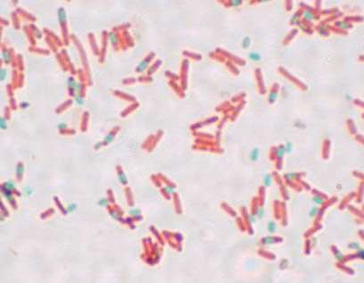
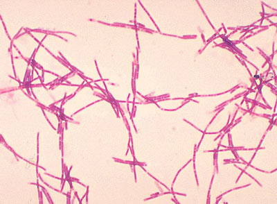
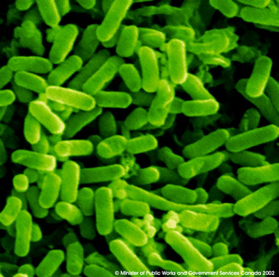
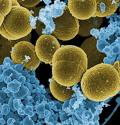
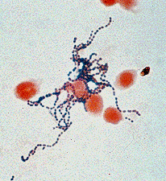
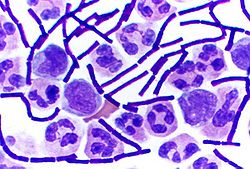
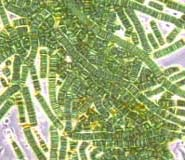
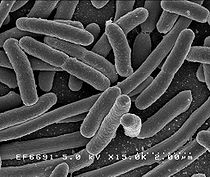
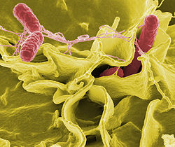
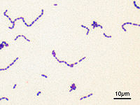

|
 Bacillus subtilis |
 Bacillus anthracis |
|
 Escherichia coli |
 Stapholoccus aureus |
|
 Streptococcus pyogenes |
 Bacillus anthracis (stained purple) growing in cerebrospinal fluid. |
|
 Filaments of photosynthetic cyanobacteria. |
 Scanning electron micrograph of Escherichia coli bacilli. |
|
 Color-enhanced scanning electron micrograph showing Salmonella typhimurium (red) invading cultured human cells. |
 Streptococcus mutans visualized with a Gram stain. |